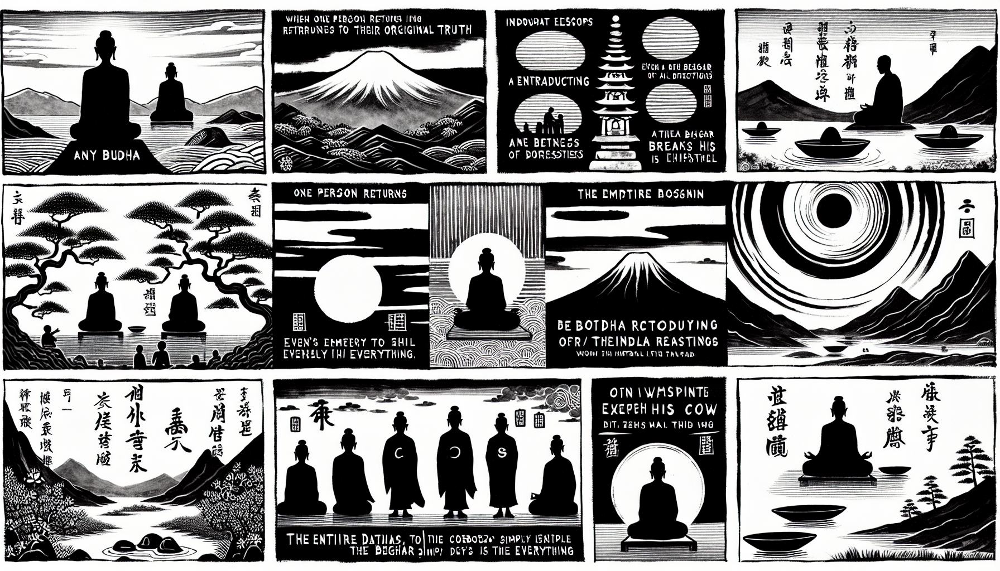

七十五巻 巻一覧
正法眼藏第67 轉法輪
本ページは tools/gen_web_volumes.py が doc/正法眼蔵.txt から冒頭を抜粋して生成しています。図・詳細解説は今後の手編集で拡張できます。
出典（原文）: https://shomonji.or.jp/zazen/doc/genzou.html
この巻の位置づけ（学習メモ）
道元『正法眼蔵』七十五巻の第67篇「轉法輪」です。禅籍・経典への引用や語の行間が重なりやすいので、一度ですべてを要約に還元しない読み方を推奨します。問答 Bot では巻スコープにこの題名を含めると応答が安定しやすいことがあります。
語彙の足場
- 題名語：巻題「轉法輪」は、道元が本章で特に扱う論点の看板です。辞書義だけに固定せず、本文中の用例で意味を確かめます。
- 引用と典故：公案・経文の引用は、一字一句の照応（何に答えているか）を押さえると全体が見えやすくなります。
- 学び方：冒頭だけでも音読し、分からない箇所は印を付けて後から問うとよいです。
本文（冒頭・自動抜粋）
出典はリポジトリ内 doc/正法眼蔵.txt です。原文の参照元: https://shomonji.or.jp/zazen/doc/genzou.html
先師天童古佛上堂擧、世尊道、一人發眞歸源、十方虛空、悉皆消殞（先師天童古佛、上堂に擧す、世尊道はく、一人發眞歸源すれば、十方虛空悉皆消殞す）。
師拈云、既是世尊所説、未免盡作奇特商量。天童則不然、一人發眞歸源、乞兒打破飯椀（師、拈じて云く、既に是れ世尊の所説なり、未だ免れず盡く奇特の商量を作すことを。天童は則ち然らず、一人發眞歸源すれば、乞兒飯椀を打破す）。
五祖山法演和尚道、一人發眞歸源、十方虛空、築著磕著。
佛性法泰和尚道、一人發眞歸源、十方虛空、只是十方虛空。
夾山圜悟禪師克勤和尚云、一人發眞歸源、十方虛空、錦上添花。
大佛道、一人發眞歸源、十方虛空、發眞歸源。
いま擧するところの一人發眞歸源、十方虛空、悉皆消殞は首楞嚴經のなかの道なり。この句、かつて數位の佛祖おなじく擧しきたれり。いまよりこの句、まことに佛祖骨髓なり、佛祖眼睛なり。しかいふこころは、首楞嚴經一部拾軸、あるいはこれを僞經といふ、あるいは僞經にあらずといふ。兩説すでに往往よりいまにいたれり。舊譯あり、新譯ありといへども、疑著するところ、神龍年中の譯をうたがふなり。しかあれども、いますでに五祖の演和尚、佛性泰和尚、先師天童古佛、ともにこの句を擧しきたれり。ゆゑにこの句すでに佛祖の法輪に轉ぜられたり、佛祖法輪轉なり。このゆゑにこの句すでに佛祖を轉じ、この句すでに佛祖をとく。佛祖に轉ぜられ、佛祖を轉ずるがゆゑに、たとひ僞經なりとも、佛祖もし轉擧しきたらば眞箇の佛經祖經なり、親曾の佛祖法輪なり。たとひ瓦礫なりとも、たとひ黄葉なりとも、たとひ優曇花なりとも、たとひ金襴衣なりとも、佛祖すでに拈來すれば佛法輪なり、佛正法眼藏なり。
しるべし、衆生もし超出成正覺すれば佛祖なり、佛祖の師資なり、佛祖の皮肉骨髓なり。さらに從來の兄弟衆生を兄弟とせず。佛祖これ兄弟なるがごとく、拾軸の文句たとひ僞なりとも、而今の句は超出の句なり。佛句祖句なり、餘文餘句に群すべからず。たとひこの句は超越の句なりとも、一部の文句性相を佛言祖語に擬すべからず、參學眼睛とすべからず。而今の句を諸句に比論すべからざる道理おほかる、そのなかに一端を擧拈すべし。
いはゆる轉法輪は、佛祖儀なり。佛祖いまだ不轉法輪あらず。その轉法輪の樣子、あるいは聲色を擧拈して聲色を打失す。あるいは聲色を跳脱して轉法輪す。あるいは眼睛を抉出して轉法輪す。あるいは拳頭を擧起して轉法輪す。あるいは鼻孔をとり、あるいは虛空をとるところに、法輪自轉なり。而今の句をとる、いましこれ明星をとり、鼻孔をとり、桃花をとり、虛空をとるすなはちなり。佛祖をとり、法輪をとるはすなはちなり。この宗旨、あきらかに轉法輪なり。
轉法輪といふは、功夫參學して一生不離叢林なり、長連牀上に請益辨道するをいふ。
正法眼藏第六十七
爾時寛元二年甲辰二月二十七日在越宇吉峰精舍示衆
同三月一日在同精舍侍者寮書寫之 後以御再治本校勘書寫之畢
図解（4コマ・AI生成）
教義の根拠は本文・出典に従い、漫画は比喩の補助に留めてください。

深掘り（読解のコツ）
- 道元文は定義の羅列に見えても、多くの場合誤解への遮断と正伝の姿勢が背骨になっています。
- 「当体」「現成」「即」などの語が出たら、その巻独自の差別相にどう接続しているかをメモしておくとよいです。